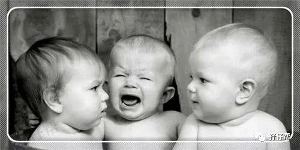
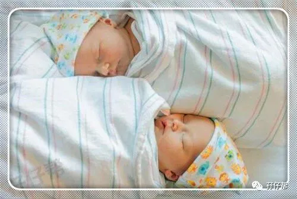
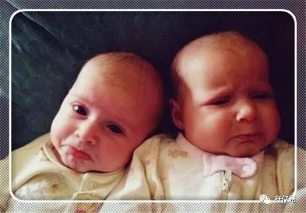
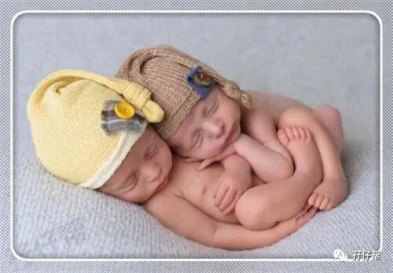
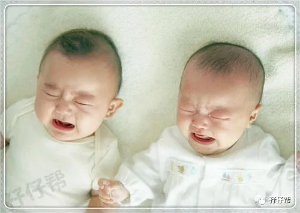
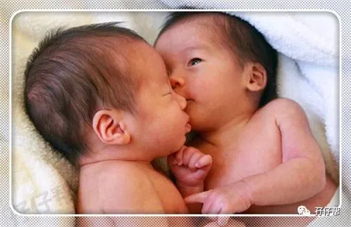
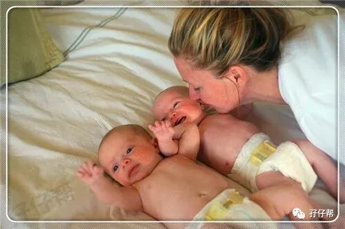
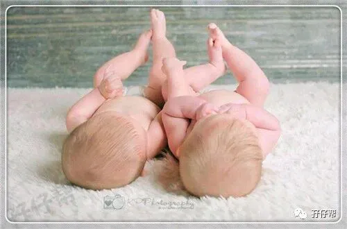

孖仔帮
与您分享双胞胎育儿路上的囧人囧事
点击蓝字
关注我们
原文|twins magazine 译者|圆圈妈
01
我在养育双胞胎兄弟圆圈的第一年，非常惨不忍睹。这是我的第一胎，一口气蹦出两个娃，有种被秒杀的感觉。
心里懊悔不已，读书那么多年，最后败在两个孩子的手上，为什么学校不教一下怎样为人父母呢？这让我们这些新手父母情何以堪啊！
我寄希望于在网络上得到一些关于双胞胎宝宝的养育经验，让我有经验可循，不至于太狼狈。
无奈，国内对双胞胎家庭太不厚道了，在这方面的育儿知识接近零。
所幸，上帝老早就给我安排好，让我在大学期间主修翻译专业，在圆圈爸的IT技术帮助下，得以翻墙到国外，与全世界的双胞胎妈妈共享双胞胎宝宝育儿经！
02
以下文章是英国一位双胞胎妈妈安妮·马歇尔养育双胞胎宝宝的第一年总结的心得体会。
非常有温度的一篇育儿经验分享。现翻译成中文，分享给正在双胞胎育儿路上浴血奋战的双胞胎妈妈。
不管是母乳还是配方奶，请同时一起喂奶
我原本打算进行母乳喂养，但最后失败告终了。
我的丈夫产假修完后就回到工作岗位，我不得不独自一人带两个双胞胎宝宝，我首要面对的问题是如何给他们喂奶。
我计划着喂完一个，再喂另一个，可是我太天真了，另一个等待喂奶的宝宝饿得慌，早已鬼哭狼嚎，容不得半点怠慢。
这让我无法继续下去，不管先喂哪个，我都觉得罪过。有一位双胞胎妈妈介绍了一个同时给双胞胎宝宝喂奶的方法，可是“臣妾做不到”
我唯一想到的办法是，把他们放在安全座椅上固定好，然后用奶瓶同时给他们喂奶。
规律！规律！规律！很重要
我喜欢按计划行事，对待我的宝宝们亦如此。
在他们满月后，我就开始训练他们规律饮食和作息。目标是让他们同时喝奶，同时小睡，同时玩耍，同时睡觉。
你也许会觉得让双胞胎宝宝同步简直是天大的笑话。
是的。这看起来好像很难！
可是当你知道双胞胎同步饮食作息可以给你带来事半功倍的效果，那你一定会不惜一切代价，为这伟大而疯狂的计划付诸行动。
起初，先定一个小目标，比如同步喝奶。每隔一段时间，根据宝宝们的适应能力和实际生活规律再做适当调整，而自己也能在不断的 “摸滚带爬”中找到方向。
只要不放弃，总有成功的一天。
尽可能多与两小宝宝互动
除了照顾两小宝宝们的吃喝拉撒睡，还可以升级下我们与双胞胎宝宝们的互动方式。
比如，用婴儿车推着带他们去公园散步，邀请亲戚朋友到家里来热闹下气氛…
不必过分担心宝宝们不适应或不喜欢，只要是在自己的父母身边，他们一定乐意奉陪的！
给他们换尿布的时候，来一个躲猫猫游戏，喂奶的时候，来一个充满爱意的对视，刚洗完澡的时候，给他们一段温柔的抚触…
哪怕只是简单的拥抱，也能让两小宝宝们找到安全感，开心半天…
如果双胞胎宝宝早产，请不必介意
我的双胞胎宝宝早产5周，我好朋友（单胎妈妈）的宝宝刚满月就会自己把奶嘴放进嘴里，而我家的两个宝宝却始终在睡觉。
我知道拿足月儿与早产儿做比较没有意义且很残忍，可是我心里依然有疙瘩，也很担心我的孩子们从出生就输在了起跑线上。
我的其中一个小宝宝有多动症，6个月的时候被我送去做康复治疗，希望及时的干预治疗不会影响到她的大动作的发展。
我不敢肯定这跟她过早出生有没有关系，但又何妨，我愿意陪着她们慢慢长大。
没有最糟糕，只有更糟糕，但终将过去
当两宝宝无休止地哭…当你的睡眠被压榨地支离破碎…你会对生活失去信心，甚至一度以为生活将永远如此，一如掉进万劫不复的深渊，永无超生之日。
你感到孤单绝望，没有人懂你，甚至连你自己都不懂自己了，你渐渐地迷失了自我…
然而，柳暗花明又一村…
你突然发现，就在你觉得快要坚持不下去了，那两个让你崩溃绝望的宝宝们，居然开始睡整夜觉了，居然会坐起来独立玩耍了，甚至会冲着你坏笑了….
这一切好像你一宿做了噩梦突然剧情大反转来个美梦，最后happy ending
只要你开心了，全世界都笑了
有句话是这么说的，“如果妈妈不开心，孩子们就不会幸福”。如果你感到不快乐，请不要太苛刻自己了。
你只是当妈了而已，并不是被终身剥夺了自由。
所有事情都事无巨细地做好，唯独忘记了让自己变得更好。
这样的你快乐吗？你不快乐，你的宝宝们哪来的幸福可言？
因此，你不必强迫自己必须是个完美的妈妈，双胞胎宝宝的到来，虽然让你分身无术，但并没有让你失去任何东西。
你应该有自己的时间，也许这听起来有点自私，但如果你偶尔的自私能让宝宝们受益，何乐而不为呢？
为自己保留一点时间吧，做一些自我感觉良好的事情，比如运动，瑜伽，看电影，插花等，
双胞胎宝宝的第一年其实很快就过去了。
你会发现那两个被你轻而易举就左拥右抱的小宝宝们，一瞬间就可以蹒跚学步，脱离你的怀抱，努力向前迈进…
03
圆圈妈有话说：
其实这位双胞胎妈妈分享的育儿经验可参考性不强，既没有实战型的经验参考，也没有理论性的教程指导。
可是我看完后却觉得非常有战斗力，不知你们是否如我一样。为什么别人能把双胞胎育儿的文章写得那么洋洋洒洒，读完之后又让人感觉非常有温度。
发现国外双胞胎妈妈在育儿方面非常乐观从容。也许她们没有婆媳困扰，只需要一心一意对付两个嗷嗷待哺的小宝宝即可，所以光明正大，落落大方（哈哈…此处省略一万字的婆媳口水战…）
我也写过一篇文章《如何顺利度过双胞胎宝宝的第一年》，通篇都是“教唆”人如何请求帮助等，却从来没有提到作为双胞胎妈妈，更加应该学会独立自主，养育双胞胎宝宝。
看来我要检讨下自己了。
没有哪个妈妈在养育孩子的时候不狼狈，也许只生一个孩子，可以游刃有余，但两个一起来，也未尝不可。
老外可以一人带5个孩子轻轻松松，而我们一人带娃却要惊天地泣鬼神。
外国的月亮不见得比中国的圆吧！
道理都懂，关键是心态！
支撑着双胞胎妈妈熬过第一年的除了是一口仙气，更多的是对养育双胞胎宝宝路上的信心和决心！
双胞胎妈妈们，我们一起勉励吧！
重要通知
孖仔帮有双胞胎爸爸群啦！
在此你们可以互相交流下初为人父的喜悦和已为人父的辛酸，还有你们男人间的家长里短…尽情唠嗑吧！
入群方式：＋圆圈妈的微信(sgguy-com)，我会发群聊邀请给你们。欢迎准爸爸的加入双胞胎育儿大家庭，一起分享双胞胎育儿经。
1
END
1
本文系圆圈妈sgguy-com原创，来源于孖仔帮，专注双胞胎孕期育儿经验分享，著作权归孖仔帮所有。
长按识别二维码关注我们
我猜你肯定喜欢看下面的文章，对不对嘛？关注孖仔帮，回复下方文章前面的数字编号即可阅读。
105:同卵双胞胎的天敌--双胞胎输血综合征
201:双胞胎与唐氏筛查---美丽的邂逅
212:原来双胎妈妈可以这样数胎动，好简单啊
215:双胎子宫日记系列|（下）你看不看？双胞胎妈妈直播剖腹产全过程
302:喂养干货||如何训练双胞胎宝宝睡整夜觉
306: 真人示范！双胞胎妈妈高难度喂母乳技巧
404:双胞胎家庭生存技巧01：舍不得孩子套不住狼，新生入园开学季必备
604:那些又俗气又搞笑的双胞胎姓名大全【第一季】
711:想要做一个四海八荒的双胎妈妈，你需要这些工具
714:那个每天晚上9点钟才到家的双胎妈妈，失业了…
近日发现有些平台未经允许转载了圆圈妈的文章，在此声明下：
若喜欢圆圈妈的文章，无条件欢迎大家分享转发到朋友圈。
如需转载至公众号请联系圆圈妈（微信sgguy-com）授权，或扫以下微信二维码。
各位双胎妈妈，更多孖仔帮原创育儿文章请猛戳 "阅读原文" ，或者直接上圆圈妈的个人博客，大把双胎孕期育儿心得经验分享。
阅读原文：
https://www.sgguy.com/twinsbang








